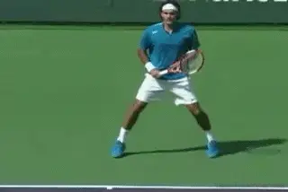
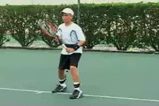
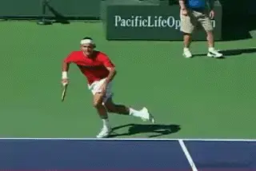
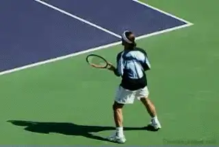
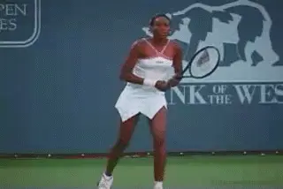
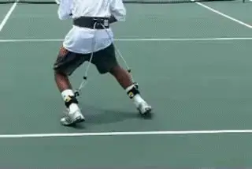
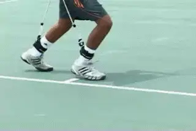
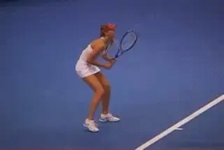
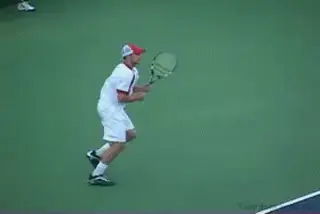

The Athletic Foundation¶
Pat Doughert¶

The athletic foundation is often the missing link in developing into a professional player.
As the biomechanics specialist at the Bollettieri Tennis Academy, for two decades I've worked to help young players develop into tour professionals. When I compare the top pros to aspiring young players at our academy, the junior players tend to share grips, swings, footwork patterns, and stances with the pros. The missing link for most juniors is a strong, disciplined athletic foundation.
The evolution from junior to professional is a process of evolving from player into athlete. I have found that the ability to establish and defend a strong athletic foundation is the measure of a great tennis athlete. In my view, most instructors and coaches don't tend to focus enough on developing this vital athletic component in young players.

Training in the AP Belt can make a huge difference in improving court movement for players at all levels.
In my new series for Tennisplayer, I hope to help players and coaches understand the athletic foundation and develop more efficient movement techniques. In Part 1, I'll explain the physical qualities of the athletic foundation and the importance of being able to establish, maintain and defend it during battle. I'll also introduce you to my patented training device that accelerates the development of these skills. It's called the Athletic Performance Belt (A.P. Belt).
Initally I was a little reluctant to incorporate the A.P.Belt directly into my first article for fear that the series would seem too much like an informercial right off the bat. But after talking to John Yandell, he convinced me that the use of the belt was central to conveying the concept of the Athletic Foundation. In fact the belt is now required equipment at the Academy for all full time students. We've also made it possible for all Tennisplayer subscribers to order the belt at a special price. link.
|  | |
| On the court do you move like a race car--or a tractor? |
Form and Function
So what is the athletic foundation? Let's start with a comparison drawn from auto racing. The structural design and components of any vehicle tell the story of the vehicle's intended function and determine its performance capabilities. Consider the Formula-1 racing car. Beneath a Formula 1 car's flashy exterior lies a sturdy frame reinforced by a very tight suspension for razor sharp handling.
The car's center of gravity hovers only inches above the ground. [[The width of the wheelbase is proportionately very wide.] [Together, the wide base and low center of gravity enable the car to perform sharp turns at high speeds and achieve maximum stability against the forces that cause rollovers.]]
At the opposite end of the spectrum is a farm tractor. [A tractor's design reflects the specific needs of the farmer who drives it. Acceleration, speed, and handling aren't requirements to succeed in farming.] The tractor needs plenty of ground clearance and a high center of gravity to travel through the dirt and mud in a field and stay above the crops without damaging them.

On court a movement specialist resembles a Formula 1 racer.
Now imagine a Formula 1 car attempting to perform the off-road tasks of a tractor. Instantly, it gets stuck in the mud. Conversely, imagine a tractor traveling at top speed through a slalom course. It's a rollover on the first corner. The point is exactly the same in understanding how we move on the court. Our form must be designed for optimal function.
Movement Specialists
As a child one of the first physical skills, you learn is how to walk. When you walk your base of support is narrow, about shoulder width. The center of gravity is high. Your stride lengths are slightly wider than shoulder width. These elements are analogous to the structural characteristics of the tractor. But in tennis, you'll never reach your athletic potential performing like a tractor. Instead, you need to develop the performance characteristics of the race car.
I believe that the greatest tennis players are \"movement specialists.\" Movement specialists are athletes who have learned how to transform their body posture to resemble the design characteristics of a Formula 1 car. The chart shows the similarities. Top players use their movement strengths as a weapon to dominate the opposition. They have explosive reaction times and quick acceleration that allows them to cover every inch of the court and maximize offensive opportunities. Fluid and agile footwork enables them to efficiently track down balls and smoothly execute their strokes, even on the run. Instantaneous changes of direction and sharp recovery skills are their weapons for defending the court, minimizing open court opportunities for the opponent.
Formula-1 Car Athletic Foundation
Wide Wheelbase Wide Footwork Base for Reaction/
Stances
Minimal Ground Clearance Knees Bent / Hips Low to the Ground
Sturdy Frame Strong Upright Back Posture
Tight Suspension Intense Muscular Reinforcement of
Foundation
Supercharged Engine Powerful Lower Body Muscles
Speed shift Transmission Multi-Directional Quick Footwork
Patterns
The \"athletic foundation\" is a total body framework that when activated, powers and stabilizes all footwork and all strokes. This foundation parallels the structural qualities of the Formula 1 car and achieves its structural integrity through muscular intensity. You'll see the great athletes establish their foundation just prior to their reaction on the first shot. They then work hard to defend these qualities of the athletic foundation until the point is over. The 3 essential structural qualities of the athletic foundation are:
-
Wide Footwork Base of Support (1.5 to 3 Shoulder widths apart)
-
Low Center of Gravity (Hip Position)
-
Reinforced Back Posture

**Agassi's foundation: wide base, lowered center of gravity, great posture.**
[Wide Base of Support]
For quicker reaction time as well as better power and control in stroke production, the optimal footwork base is 1.5 to 3 shoulder widths apart. With a wider base it becomes easier to maintain the essential low to the ground positioning. If your footwork base is too narrow, you'll struggle to remain low enough because it creates an added load on your legs which causes fatigue much more quickly.
Another natural by-product of a very narrow base is very slow and inefficient first step reactions. (In Part 2 of this series, you'll learn all about first step reaction techniques.)
When the footwork base is too narrow in the hitting stances, it prohibits effective forward weight transfer and typically results in too much upward launching through the stroke.
The end result is a loss of power and control in stroke production.
Many players aren't comfortable establishing a wider footwork base because they feel it slows down their first-step reaction. However, there is a specific footwork technique called the drop step that we will look at in detail that allows top players to create an explosive first-step reaction from this wider base.

Great athletes establish the athletic foundation just prior to reacting to their opponent's shots
Another component in the athletic foundation that you must learn is how to center your balance on the balls of the feet. Movement specialists not only work with quick adjustment step footwork in setting up the optimal stance, [[they continue to adjust their fee until their body weight is centered on the balls of their feet]. [Centering their balance off the heels and on to the balls of the feet provides better power and stability to the stroke mechanics.]]
Low Center of Gravity
The actual location of the center of gravity in humans varies by body type. In females, the center of gravity tends to be between the hips, where in males it tends to be slightly higher. The difference is nominal, however, so we typically refer to the hips as the reference point for the center of gravity.
From a wide base the drop step generates an explosive first move.
\ Athletic Height
When you are down in the athletic foundation position, you establish what is referred to as your \"athletic height\". Your athletic height should measure approximately 6 inches to one foot below your normal standing height. You achieve this low-to-the-ground position through bending your knees to lower your hips, while maintaining upright back posture.

Watch Venus lower her center of gravity as she creates her foundation.
Most players have trouble maintaining a low enough athletic height during play simply because they haven't developed all the corresponding movement techniques associated with being low to the ground. In addition, it requires more leg strength and stamina to play low. Being able to maintain a consistent athletic height in your movement produces that smooth and fluid look of the champions. Great athletes make movement look effortless, though it takes a considerable amount of effort to create that look.
Because it is not easy to stay low and perform at the ideal athletic height, most players succumb to playing too upright much of the time. As a result, they develop inefficient movement habits that correspond with a high center of gravity. They end up moving more like that tractor than the race car.
Some players try hard to \"play low\" but just can't seem to maintain the low athletic height. Coaches yell at them to \"stay low\" but it is often to no avail. In the long run, playing too upright is very inefficient. It not only produces poor results (on court), but you'll fatigue much more quickly over the course of a match. The fact is that if you've never practiced and trained your body to move while maintaining a low center of gravity, you are not equipped with the skills to get the job done in matches.

The AP Belt helps players develop and maintain their athletic foundation.
This is where the Athletic Performance Belt comes in. The Athletic Performance Belt is a training device I patented many years ago. The Belt is simple to use in practice and is the most effective method I've found for teaching players how to establish, maintain and defend a strong athletic foundation. By regulating the height of the athletic foundation during practice, it naturally teaches you the most efficient movement techniques that correspond with a low center of gravity. Within a short period of time the habits you learn in practice will carry over to your match play.
The A.P. Belt is comprised of a bungee cord that passes through a pulley mounted on the back side of a belt and attaches on each ankle. By adjusting the length of bungee based on your height, you feel resistance from the cord when your technique isn't optimal. This \"resistance feedback\" teaches you \"right from wrong.\" You'll feel resistance from the belt the moment you deviate from correct technique. We know from learning theory that the way players learn is by developing a kinesthetic feel for every aspect of the game. Wearing the belt helps players develop this directly.
|  | |
| The Belt helps players create a wide base, low center of gravity, and reinforced back posture. |
Most players experience immediate increases in power and control in their stroke production from the first time they put the belt on. It pays dividends in nearly every aspect of your game. Training in it on a regular basis will develop a stronger, more defined athletic foundation, increase your quickness, power and control, build tremendous lower body strength and improve stamina.
Using the belt, you will experience greater demands on your lower body muscles while maintaining ideal athletic height. This is a real positive, because it will help your body develop the ability and the strength to manage the improved loading in your strokes. Eventually, you'll be more efficient and have the stamina to go the distance playing from a better foundation.

By working your lower body, the belt improves loading, efficiency, and stamina.
Strong Upright Back Posture
Can a person's self-confidence be accurately assessed merely by observing how they stand and carry themselves? Most certainly, and the most significant indicator is back posture. Typically, people tend to display low self-esteem and lack of confidence through poor back posture. Conversely, a person with high self-esteem and confidence tends to maintain strong upright posture. Beyond being a measure of your self-confidence, there are enormous physical benefits you gain by maintaining strong back posture.
Strong back posture combined with core strength is the final link to reinforcing your entire athletic foundation. We've all been told for good reason that when lifting heavy objects one should keep their back straight to avoid injury. This holds true when competing in sports like tennis where moving rigorously and creating powerful strokes are in demand. Learning to activate your back muscles with intensity to reinforce your posture creates an ideal support system for the shoulder mechanics.
Intensely reinforced back posture efficiently channels the power generated from the lower body up to the shoulder mechanics to produce powerful strokes. In addition, posture ensures that the shoulders remain level and stable during stroke production, especially critical while sliding on clay. From a movement perspective intensely reinforced back posture works like a tight suspension in a Formula 1 car. It allows you to generate quick reactions and sharp changes of direction while resisting the forces of inertia that slow you down.
Weak posture poorly manages the flow of power production and leads to strokes that easily breakdown. In addition, the risk of injury increases dramatically when you misuse the back muscles and maintain weak posture. Greater strength in the back muscles, chest and abdomen will provide better core stability for more controlled power.
Powerful Lower Body Muscles
The legs are the primary power source of movement acting like the supercharged engine of the Formula 1 car. Powerful \"quick twitch\" muscles generate explosive movement. If you look at the top professional players, you'll notice their thighs and backside tend to be very well-developed areas. This gives you an indication of how important lower body strength is to a tennis athlete's performance. Your quadriceps and gluteus must be in great shape to perform low to the ground like a Formula 1 car.

Sharapova Made or Born?
Great Athletes Can Be Made
It is a popular misconception that athletes are strictly born and not made. Sure some people are lucky enough to be born with the genetics and natural ability to maintain a strong athletic foundation from a very young age. But others are able to develop their athletic foundation and qualities through years of specific training and development. However, even the most naturally gifted athletes typically need training and development to nurture and refine their skills to full potential.
I truly believe that, through hard work and the right training regimen, it is very possible for less naturally athletic people to develop more athletic skills and movement techniques and evolve into better athletes over time. In many respects it's very similar to learning to play a musical instrument. All it takes is time to learn the basics, then quality repetition of the specific skills and techniques to engrain the habits. The better you practice, the better you develop.
As a result of genetics, upbringing, environment and opportunity, some players will develop more quickly and excel more than others. Be it sport or music, only a select few will have all the special ingredients required to rise to the very top. However, it doesn't mean you can't achieve a high level of proficiency if you work hard at it. So what if you may not be the most natural talent, destined from birth to be the next Roger Federer. It's about reaching your personal potential that really matters.

In tennis there isn't enough emphasis on critical, movement related skills.
\ Athletic Skills are Universal
The athletic foundation, first step reaction technique, quick stride acceleration footwork, change of direction techniques, etc. are basically the same maneuvers in most sports. However, all too often the emphasis in learning a specific sport is focused solely on \"non-movement\" related skills. By neglecting the development of a sound athletic foundation, we end up with \"players\" not \"athletes.\" Unfortunately, most tennis players, don't really begin developing their athletic qualities until the latter stages of development. It should be the other way around. Without training with a specific focus on the athletic movement skills, you may never learn to perform like an athlete.